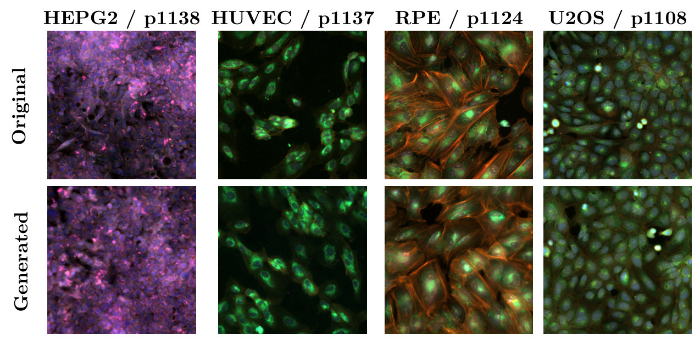
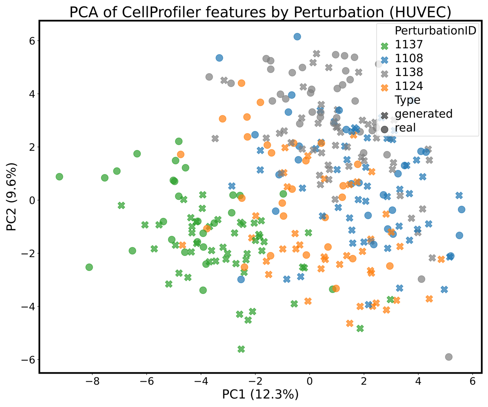
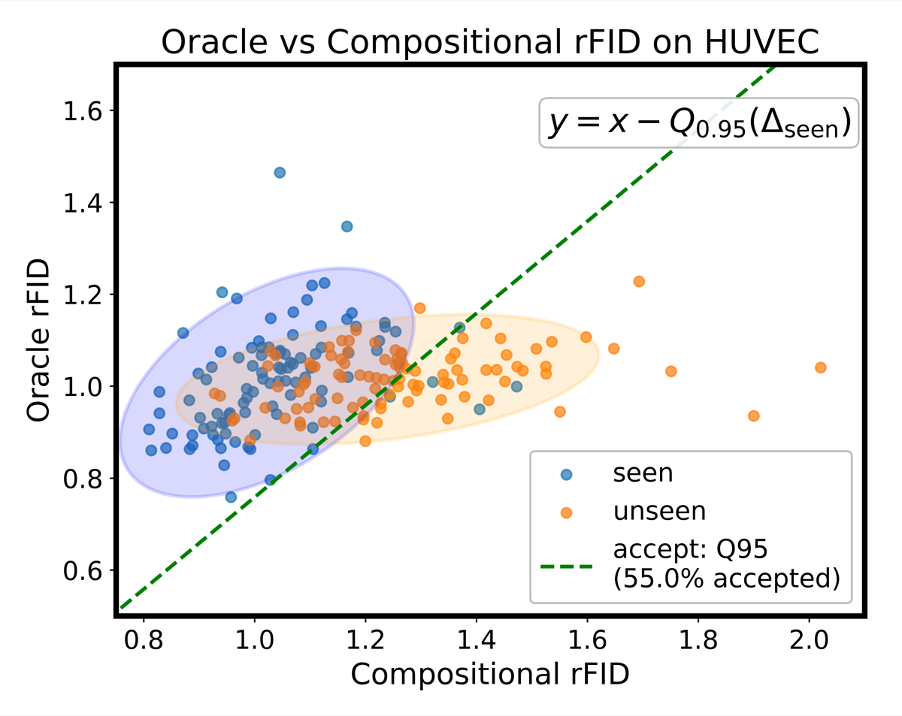
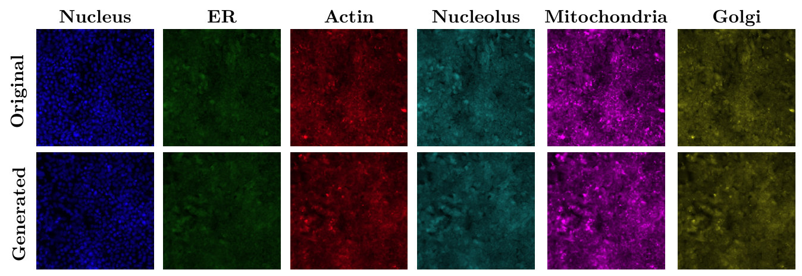

MorphGen is a diffusion model that generates full Cell Painting images, all six fluorescence channels at native resolution, for a chosen cell type and perturbation. Its central idea is to borrow biology from a foundation model: during training, the generator's internal representations are aligned with those of a model trained on microscopy images. Aligning to a biological model rather than a generic vision encoder improves both how realistic the images are and how faithfully they reproduce biology, so treatment effects measured on generated cells agree with those measured on real ones. MorphGen also reaches in-distribution quality on a majority of the cell type–perturbation pairs it never saw in training.
Why generate cells at all?
Cell Painting is a high-content imaging assay that stains eight cellular compartments across six fluorescence channels. The morphological fingerprints it produces cluster small molecules by mechanism of action, map gene function, and pick up disease-specific signatures for phenotypic drug discovery.
Every experiment, though, covers one condition. RxRx1, the dataset we train on, has 125,510 images from four human cell types (HUVEC, RPE, HepG2 and U2OS), each exposed to one of 1,108 siRNA knockdowns or 30 non-targeting controls. Picture the grid of perturbations by cell types: most of its cells were never imaged. A generator that could fill that grid with images that carry real biology would be an in silico surrogate for the experiment, a "virtual instrument" for deciding which wet-lab experiments are worth running.
MorphGen is a step toward that, not the instrument itself. It produces realistic, biologically consistent images for the conditions it was trained on, across all four cell types, and it fills in part of the grid: when perturbations are held out on one cell type but seen on others, a little over half of the missing pairs come out within the quality margin of pairs the model was trained on. The rest fall short. Knowing when to trust a sample for a condition with no real reference is a problem of its own, which we take up in Assessing Sample Quality in Conditional Generation under Compositional Shift.
Three design choices
When we started, Cell Painting generators either cropped fields down to 96 × 96 nuclei-centred patches (IMPA and CellFlux, whose RxRx1 results are typically reported on U2OS) or compressed the six channels into RGB and trained on a single cell type (MorphoDiff, on HUVEC). MorphGen keeps the full field and all six channels, across all perturbations and the four cell lines. To our knowledge, it is the first generator to deliver high-resolution, organelle-aware Cell Painting images at this scale.

1. Encode each organelle on its own
We work in the latent space of Stable Diffusion's pretrained VAE, kept frozen. MorphoDiff reuses that VAE by projecting six channels into RGB, an irreversible step that merges organelle-specific signals. We instead encode each grayscale channel separately and concatenate the six latents into one tensor that the diffusion model denoises jointly. Each organelle keeps its own signal, and joint denoising still lets the model learn how organelles depend on each other. Reconstruction alone shows the difference: with the same frozen VAE, per-channel encoding reconstructs images with more than an order of magnitude lower error than the RGB route.
2. Condition on the experiment's own labels
The denoiser is a diffusion transformer (SiT-XL/2), conditioned on learnable embeddings of the perturbation and the cell type. MorphoDiff looks perturbations up in scGPT and has to discard images of those without an entry; learned embeddings let MorphGen train on all of RxRx1. Keeping the two factors as separate embeddings also lets us combine them freely, for example swapping the cell type while keeping the perturbation fixed.
3. Align with a biological foundation model
Representation alignment (REPA) pulls a diffusion transformer's intermediate features toward those of a pretrained encoder. It was introduced with DINOv2 as the teacher, to speed up training. We use it to transfer domain knowledge instead, aligning to OpenPhenom, a channel-agnostic masked autoencoder for microscopy whose embeddings encode cellular phenotype. The teacher is used only during training; sampling never touches it.
The choice of teacher matters. Aligning to DINOv2 barely improves on no alignment at all, while biology models help clearly, OpenPhenom most. OpenPhenom alignment also makes treatment effects on generated cells closer to those on real cells than DINOv2 alignment does, so the gain is in biology as well as in image quality.
| Alignment teacher | FID |
|---|---|
| None | 56.87 |
| DINOv2 (generic vision) | 55.26 |
| CellCLIP (biology) | 53.70 |
| OpenPhenom (biology) | 50.20 |
Do the images carry biology?
For screening, plausible-looking images are not enough. The morphology has to be right, and a perturbation has to change it the way the real perturbation does. We check this in CellProfiler features, classical hand-engineered morphology measurements that are independent of the alignment teacher, on HUVEC cells for the four most frequent perturbations (1108, 1124, 1137 and the control 1138). Generated samples fall inside the real clusters of their perturbation, the perturbations stay separated, and the correlation structure of the top features matches between real and generated data.

To make this quantitative we compute a conditional average treatment effect in CellProfiler space: the squared distance between the mean features of control and perturbed cells, \(\operatorname{CATE}(p) = \lVert \mu_{\text{control}} - \mu_{p} \rVert^2\), once on real images and once on generated ones. The distance is not itself the point. What matters is whether population-level conclusions drawn from generated images match those drawn from real ones, and they do: in both, 1137 moves cells furthest from the control and 1108 the least.
| Comparison | CATEreal | CATEgen | ΔCATE ↓ |
|---|---|---|---|
| p1138 vs p1137 | 42.07 | 42.14 | 0.07 |
| p1138 vs p1124 | 22.86 | 25.56 | 2.70 |
| p1138 vs p1108 | 16.28 | 14.76 | 1.52 |
Generated images also work as training data. A perturbation classifier trained only on generated HUVEC images comes close to one trained on real images when both are tested on real cells, and adding generated images to a real training set improves accuracy on a harder ten-perturbation task, both in OpenPhenom features and in an independently trained ResNet18.
Filling in the grid
To test compositional generalization, we train two models: an oracle that sees every cell type–perturbation pair, and a compositional model from which 100 randomly chosen perturbations are held out on HUVEC while staying in the training data of the other cell types. To generate a held-out pair, the compositional model has to combine what it learned about the perturbation elsewhere with what it knows about HUVEC. We accept a held-out pair if the compositional model's relative FID stays as close to the oracle's as it does on pairs both models were trained on.

A little over half of the held-out pairs pass (55%). Two naive baselines show that this is not trivial: a model that ignores the perturbation passes 11% of the time, and one given the wrong perturbation label 4%, so the compositional model is generating perturbation-specific structure rather than generic HUVEC cells. Transfer also tends to work better for perturbations that are well represented in the other cell types, which is what compositional generalization should look like.
And by the usual image metrics?
Under MorphoDiff's own protocol (HUVEC, 50 random siRNAs, our six-channel outputs converted to RGB), MorphGen lowers FID by more than 35%, and the gap carries over to the Rohban dataset of U2OS cells with ORF overexpression. That benchmark uses little of what MorphGen can do, since no baseline generates separate organelle channels or other cell types.
| Method | RxRx1 | Rohban, 5 genes | Rohban, 12 genes |
|---|---|---|---|
| Stable Diffusion | 115 | 326 | 317 |
| MorphoDiff | 78 | 251 | 277 |
| MorphGen | 50.2 | 100.24 | 123.93 |
Each organelle channel can also be scored on its own. Relative FID divides the FID between generated and real images by the FID between two disjoint real subsets, so a value of 1 means the generated set is as close to the real data as the real data is to itself. By this measure the nucleolus channel is the easiest to model and the ER the hardest.

Limitations
- Known conditions only. Perturbations and cell types are learned embeddings of known labels, so MorphGen cannot generate a perturbation it has never seen in any cell type. Learning conditioning from example images instead of labels is a direction we want to explore.
- Partial transfer. In the HUVEC holdout, 45% of the unseen pairs stay outside the in-distribution margin.
- Low-resolution pipelines. On the IMPA pipeline's 96 × 96 U2OS crops, which MorphGen was not trained for, CellFlux has a slightly lower relative FID (2.091 vs 2.260).
- Associations, not causes. CATE here is an associational difference in a feature space. Specific causal conclusions still depend on the usual assumptions holding on the real data.
Technical details
Encoding and denoising
Each grayscale channel \(x^{(c)}\) is stacked three times into \(\tilde{x}^{(c)}\), encoded by the frozen VAE (sd-vae-ft-mse), and the six latents are concatenated:
Per channel, the reconstruction MSE is \(4.93 \times 10^{-5}\), against \(7.13 \times 10^{-4}\) for the RGB route; converting the per-channel reconstructions back to RGB for a like-for-like comparison still gives \(4.06 \times 10^{-4}\) (Table 7). Following the EDM formulation, noisy latents interpolate between data and noise, \(z_t = \alpha_t z_0 + \sigma_t \epsilon\), and the SiT network \(f_\theta\) predicts the velocity of that path, with the perturbation and cell-type embeddings added to the timestep embedding:
Alignment loss
For a clean image \(x\), OpenPhenom gives patch embeddings \(y^\star = F(x)\). The SiT hidden state at layer \(k\), passed through a small MLP \(h_\phi\), is pulled towards them:
with \(k = 8\) and \(\lambda = 0.5\), following REPA.
Sampling and training
Generation starts from Gaussian noise in the 24-channel latent and runs a 50-step Euler–Maruyama sampler. The final latent is split into six channel latents, each is decoded by the VAE, the three identical colour planes are averaged back to grayscale, and the channels are stacked into a 6 × 512 × 512 image. Training used a batch size of 16 for up to 400k steps on 8 H100 GPUs.
Per-channel and per-cell-type scores
FID and KID are computed per condition and averaged, over three seeds. When a perturbation has fewer than 500 real images, the real set is expanded with flips and 90° rotations, following MorphoDiff. Absolute FIDs are not comparable across channels, whose target distributions differ, hence the relative FID.
| Metric | RGB | Nucleus | ER | Actin | Cyto | Nucleolus | Mito |
|---|---|---|---|---|---|---|---|
| FID ↓ | 50.2 | 27.6 | 48.1 | 57.6 | 49.6 | 43.6 | 59.0 |
| Rel. FID ↓ | 1.411 | 1.691 | 1.774 | 1.562 | 1.612 | 1.489 | 1.564 |
Sampling by cell type without perturbation conditioning, and therefore without the augmentation needed to inflate small perturbation sets, gives relative FIDs between 1.136 for HUVEC and 1.529 for HepG2 (Table 3).
Citation
@inproceedings{demirel2026morphgen,
title={MorphGen: Controllable and Morphologically Plausible Generative Cell-Imaging},
author={Berker Demirel and Marco Fumero and Theofanis Karaletsos and Francesco Locatello},
booktitle={The Fortieth Annual Conference on Neural Information Processing Systems},
year={2026},
url={https://arxiv.org/abs/2510.01298}
}